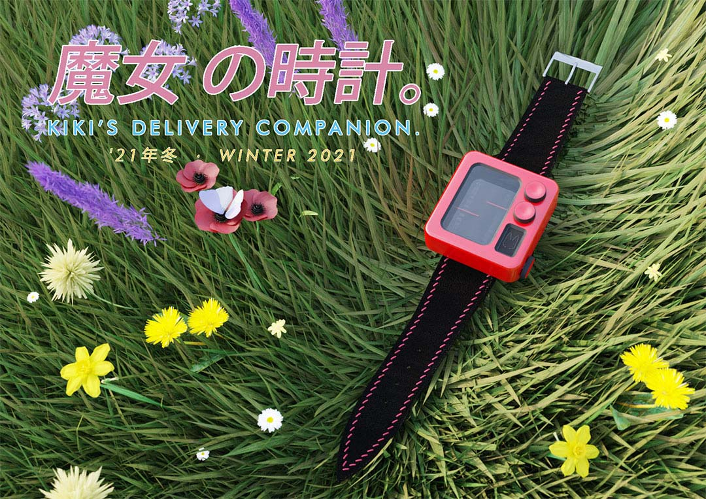

A smart watch based on a fictional character, this watch is based on the 1989 film Kiki's Delivery Service.
Renders
Leathercrafts

The watch is based on one of my favourite movies, Kiki's Delivery Service! The main inspiration was Kiki's analog radio in the movie, and it led to the knobs, slider, cat speaker grill, and the distinct linear watchface.
For the flying witch, the watch included an anemometer - a wind speed meter.
This project was also an opportunity to include leather crafts in the form of a custom leather watch strap. This is a padded watch strap with red stitching and edge paint.